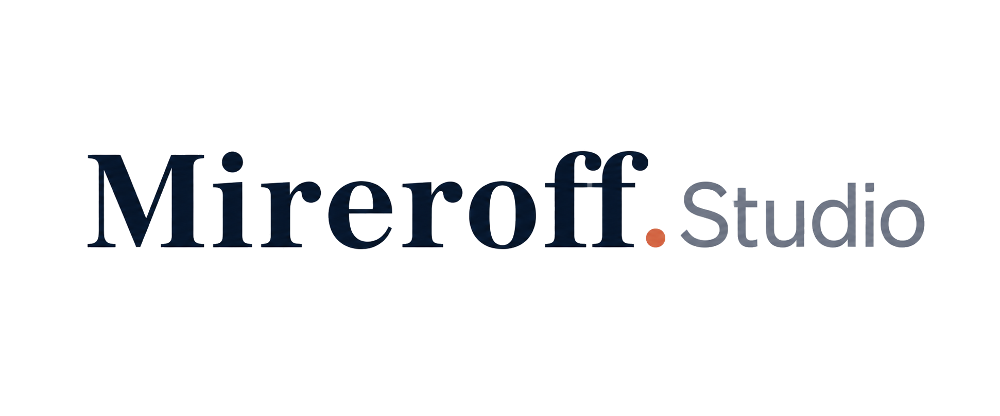

SEO técnico
Velocidade, estrutura de URLs, dados estruturados e acessibilidade — a base que o Google exige pra rankear bem.

MIREROFF.STUDIO · SEO EM BALSAS
Estrutura técnica, conteúdo e dados estruturados pra sua empresa ser encontrada organicamente no Google — sem depender só de anúncio pago.
POR QUE INVESTIR EM SEO
Anúncio pago some quando a verba acaba. SEO constrói uma posição orgânica que continua trazendo visita mesmo nos dias sem campanha ativa.
Boa parte do que aparece no Google pra "Balsas MA" hoje é página de agência de fora, sem endereço nem telefone real na cidade. SEO local bem-feito também é sobre ocupar esse espaço com quem realmente está aqui.
Velocidade, estrutura de URLs, dados estruturados e acessibilidade — a base que o Google exige pra rankear bem.
Pesquisa de termos que sua persona realmente digita, com conteúdo real respondendo a essas buscas.
Otimização pra aparecer nas buscas com intenção regional, como "em Balsas" e cidades vizinhas.
COMO FUNCIONA
Avaliamos a situação atual do site, concorrência e oportunidades de palavra-chave.
Ajustes técnicos, de conteúdo e de dados estruturados aplicados ao site.
Evolução de posição e tráfego orgânico acompanhada ao longo do tempo.
PERGUNTAS FREQUENTES
SEO é um trabalho contínuo, não instantâneo — os primeiros resultados costumam aparecer de forma gradual, e explicamos a evolução esperada no diagnóstico.
Não. SEO traz tráfego orgânico a médio/longo prazo; Google Ads traz resultado imediato. As duas frentes se complementam.
O valor depende do escopo, definido após uma análise inicial do site. Chama no WhatsApp pra gente analisar seu caso e te passar o investimento.
Não necessariamente. Se o site atual tiver muitas limitações técnicas, pode valer mais a pena refazer — veja nossa página de criação de sites.
Fale agora e a gente já começa pela análise inicial.
Quero aparecer no Google